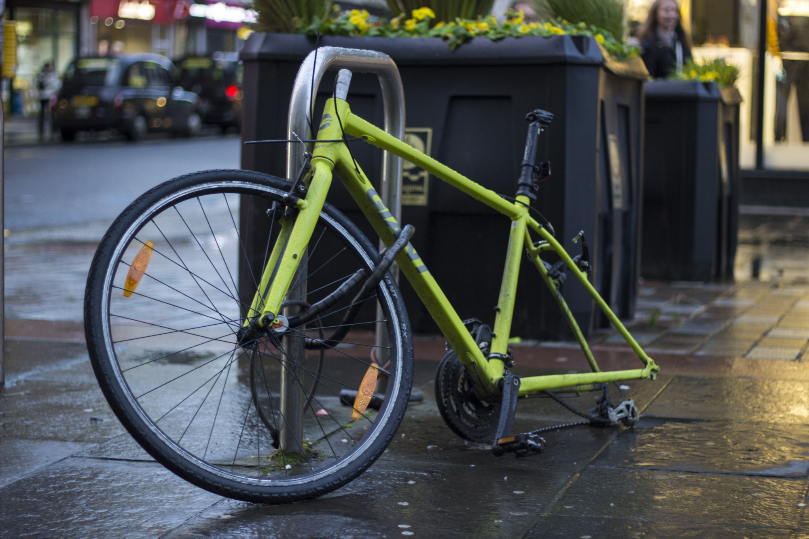

The Travels of William Barcroft
Edited and Transcribed by Steven Michaels
Glasgow
On his 26th birthday on the first of May, William Barcroft decided that he will quit his job and finally pursue his dreams of traveling the globe. William decided that he will learn how to take pictures and how to edit them. With those skills and a camera, he was to take on the world. He was fortunate enough to have the money required, and he knew that what he was doing was far out of the realm of possibility for most people, and he wanted to use this as an opportunity to show and teach people about global culture.
“I wanted to get out of my stuffy office job and see what the world was like, I had never left the country before this, and I felt like I should dive into this headfirst. Living in America, it is often so difficult to really get out of your own bubble.”
The first step on his agenda was a trip to Scotland. His mother’s side of the family hailed from Glasgow. His mother was never able to make the trip herself. The journey from New York City was the first time he had even flown in an airplane. The flight was seven hours. It would be the last time he would see his home country for the next year, or so was his plan.
He was able to lodge with a couple who were from Aberdeen, Ross, and Eilidh, who were more than accommodating and were willing to show him the sights of their Victorian city. He was able to find where his mother had grown up and where she spent a lot of her time growing up. The people he was staying with were also able to show him the extent of the Glaswegian nightlife to the extent that he hadn’t seen before in New York City.

The city of Glasgow had a much different atmosphere when it came to partying and going on nights out. For starters, the New Yorker would be remiss to mention the fact that he could barely understand the locals. Despite the communication difficulties, he was able to have a good time. Having arrived on a Friday, he found himself going to the highlands. Ross and Eilidh took him hiking, William found that he wasn’t an overly huge fan of the activity, and he made sure to note his distaste of it to his hosts repeatedly. On Sunday, William spent the day simply walking around the city, seeing the sights, and taking some pictures.

On Monday, it was time for him to leave the UK, and instead, he now was to travel to the beautiful City of Lights.
Paris
When William left Charles De Gaulle Airport, it didn’t register that he was in Paris yet. He hailed a taxi and told the cab driver where he was going. The man was a jovial sort who poked fun at his inability to pronounce Montmartre. As they drove through the city, the man pointed out various landmarks or fun facts about the city. This movie was shot here; that movie was shot there. William didn’t know what he was talking about; he never did watch many movies.
He arrived at his hostel around midday. The lady at reception checked him in, and he took the stairs to the top floor. In the hostel, there were rows of bunk beds, and it reminded him of the summers that he had spent at the various summer camps that his parents had sent him to. He now regretted wasting time at French camp, which was a three-month-long immersive learning camp. Admittedly his 15-year-old self didn’t really think French would ever come in useful for him. He guessed he would have to get by in English.
He was the only person in the room, and he freshened up and was about to leave when he thought he should bring his camera with him. It was then that he started to panic; he couldn’t find it. He thought where he might’ve left it and then finally decided that either he left it at the airport or in the taxi. He supposed there would be no more pictures; luckily, the bright day outside stopped him from sulking. On the way out, he decided to have a chat with the receptionist, and perhaps she would suggest some places he ought to go to and some sights he could see as he didn’t really have a plan here.
She told him of a half dozen places he should try close by, other than the various restaurants and food places; he was told that he should check out the catacombs before he left. He noted down the various places, a fondue place just down the street, a lovely little cafe that’s just out of the way of tourists, a bar that had a very dingy and dark atmosphere which is the reason she would go there, and some other places he didn’t quite get from her, and he didn’t want to embarrass himself by asking again. He claims he doesn’t want to make a habit of embarrassing himself in front of pretty women.
He thought that a lovely little Parisian cafe would be just the thing to give him a little pep to his step, especially when he realized how hungry he was. At the cafe, he had an espresso and a croissant. He had heard that the French dip their croissants into coffee, so he figured he should too. While sitting around, he noticed that the city really did look like all the pictures and postcards he’d seen. It was beautiful, and then the camera came back into his head. With that in mind, he set off into the city.
Paris pt.2
After a long day of seeing some sights, unclear which, he decided to go to that fondue restaurant. When he arrived, he found out that they sit singles with other parties, and he happened to sit with some Americans. He met Steven from Austin, Bobby from San Francisco, and Jason from Chicago. The waitress at the restaurant also happened to be from the US, she was from Nebraska, a fact they all had a snicker at, but she was a good sport. They ate fondue and drank wine from baby bottles with pacifiers on top. The waitress had even given them free dessert. After dinner, the trio invited William to the apartment they were renting. Then they proceeded to drink some more; in all the confusion, the trio never did get William’s contact info. The four men, at some point, went to sleep. It was in the morning when one of the men had found that William had left before any of them had awoken and that he had left the journal that he had with him. The men had found that he wasn’t much of a travel writer.